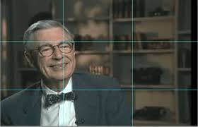

What is the Rule of Thirds?
The Rule of Thirds is a fundamental principle in photography and design that helps create balanced and visually appealing compositions. By dividing an image into nine equal parts using two horizontal and two vertical lines, key elements are placed along these lines or their intersections to enhance the overall balance and interest.
History
The Rule of Thirds has been utilized by artists and photographers for centuries to guide the placement of key elements within a composition. It is rooted in the golden ratio and has been a staple in visual arts to create harmonious and engaging visuals.
Application
By dividing the image into nine equal parts, the Rule of Thirds helps in positioning the main subject along the lines or their intersections, enhancing the overall balance. This technique guides the viewer’s eye naturally through the composition, making the image more dynamic and engaging.